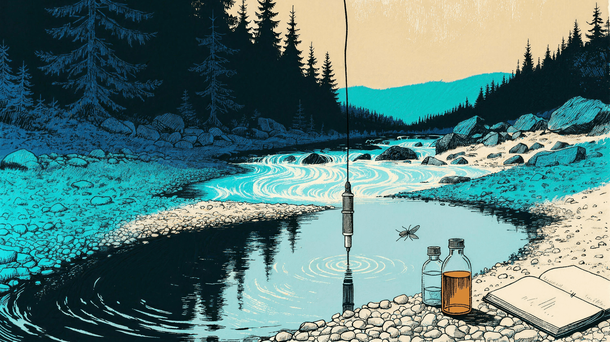

NEON Water Chemistry · unofficial
What’s in the water?
Pick a site, pick an analyte like nitrogen or salt, and watch it change through the seasons.
Pick a water bodyThe hosted app can take a few seconds to wake up.

NEON Water Chemistry · unofficial
Pick a site, pick an analyte like nitrogen or salt, and watch it change through the seasons.
Pick a water bodyThe hosted app can take a few seconds to wake up.
